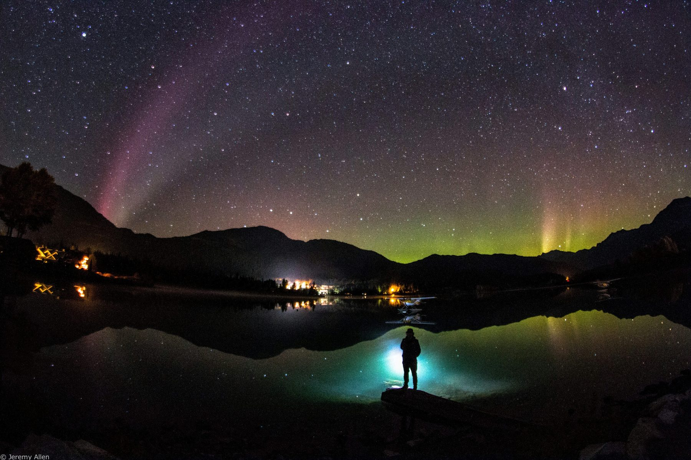

Photography Tips
The Sea to Sky is made for photographs
Granite walls, glaciated peaks, still lakes and a river estuary: the Squamish and Whistler area is one of the easiest places in the country to take a great picture from a boat. The catch is that water, electronics and cold hands don't mix. These tips will help you bring back sharp, well-composed pictures and a dry phone.
Protect your gear first
- Phone: use a floating waterproof pouch on a lanyard, or at minimum a zip bag in a dry bag.
- Camera: keep it in a dry bag or hard case between shots, with a wrist or neck strap clipped on.
- Lenses: one versatile zoom is plenty. Don't swap lenses on the water.
- Seating: sit low, keep your weight centred and don't stand up to shoot. Kneel or ask a partner to hold the canoe steady.
Shoot at golden hour
Low sun gives long shadows, warm light and calm water. Aim for the first or last hour of daylight, then paddle slowly and stop paddling for each shot, since movement blurs the frame. See our guide to sunrise and sunset canoe trips.
Composition ideas
- Reflections: get low and shoot across the surface so the mountain and its mirror image fill the frame.
- Scale: a canoe or paddler against a big mountain shows how big the landscape is.
- Leading lines: a canoe's bow, a stream of ripples or a line of driftwood leads the eye into the picture.
- Silhouettes: shoot into the sun and expose for the sky so the paddlers turn into dark shapes against the glow.
- Details: paddle blades, drips, a boot and a thermos on a seat make nice detail shots to round out a story.

Night skies from the shore
On clear nights the Sea to Sky has some brilliant skies. For night photography, shoot from the shore rather than the boat: you need a tripod, a wide, fast lens and a long exposure, none of which work well on the water. Bring a headlamp with a red light setting so you don't spoil your night vision, and tell someone where you're going.
Quick phone tips
- Wipe the lens with a clean cloth. Water spots are the number one reason for blurry phone photos on the water.
- Tap the sky to lower the exposure, and tap the mountain to lift it. Try both and keep the best.
- Use burst mode when paddlers are moving.
- Use the 2x lens for the best portraits of friends in the canoe.
Be a good guest
Keep a respectful distance from wildlife, avoid nesting birds and stay out of closed areas. No photo is worth stressing an animal. Please don't fly a drone near wildlife or without checking Transport Canada's rules first.
Questions
Can I take a good camera in a canoe?
Yes, a canoe is a stable platform for cameras. Keep your gear in a dry bag or hard case between shots, use a strap, and avoid changing lenses on the water.
What's the best way to protect a phone on a paddle trip?
Use a floating waterproof pouch with a lanyard, and keep a dry bag for spares. Test the pouch in the sink before the trip.
When is the best time to photograph from a paddle?
The hour after sunrise and before sunset, when the water is calm and the light is warm. Cloudy mornings with mist can also be magical.
More Sea to Sky guides
- Golden Hour on the Water: Sunrise and Sunset Canoe Trips Around Squamish
- What to Pack for a Canoe Day Trip in Squamish and Whistler
- How to Canoe: A Beginner's Guide
- Canoe vs Paddleboard: Which Should You Rent?
- Paddling with Kids and Dogs in Squamish
- Squamish canoe delivery · Squamish paddleboard delivery